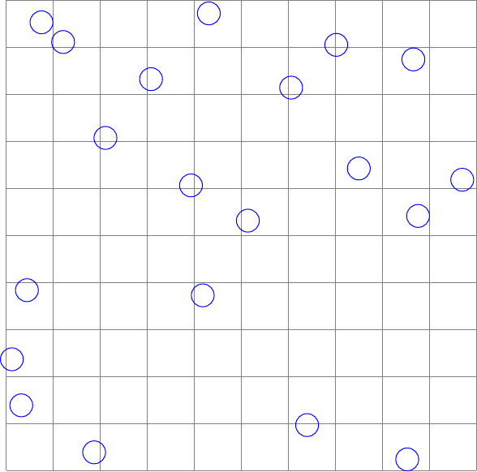
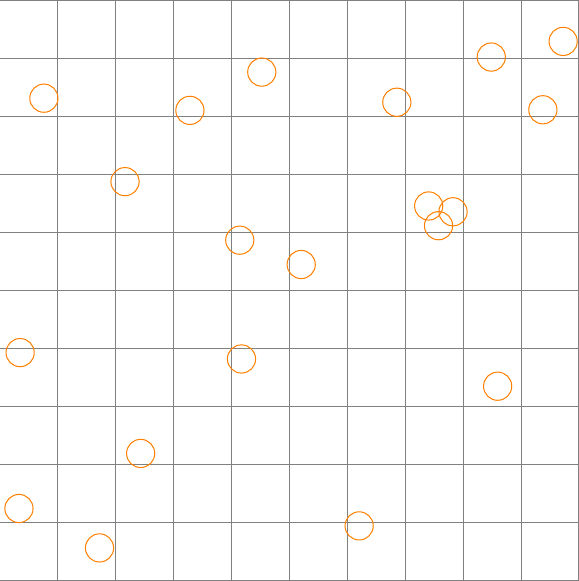
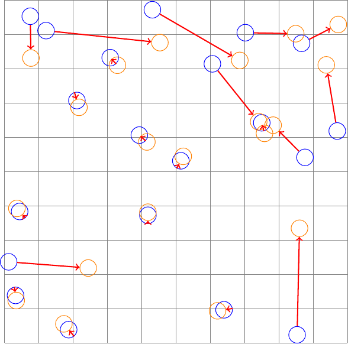

\(\newcommand{\R}{{\mathbb{R}}}\) \(\newcommand{\Z}{{\mathbb{Z}}}\) \(\newcommand{\N}{{\mathbb{N}}}\) \(\newcommand{\var}[1]{{\color{red}{\mathbf{#1}}}}\) \(\newcommand{\param}[1]{{\color{blue}{#1}}}\) \(\newcommand{\mathsc}[1]{{\normalfont\textsc{#1}}}\) \(\def\sc#1{\dosc#1\csod}\) \(\def\dosc#1#2\csod{{\rm{#1{\rm\small #2}}}}\) \(\newcommand{\set}[1]{{\sc#1}}\) \(\newcommand{\mathvar}[1]{\var{#1}}\) \(\newcommand{\half}{{\small{\frac{1}{2}}}}\)
10. Assignment or bi-partite matching¶
An important special case of the minimum cost flow problem and, in particular, the transportation problem, is the so called assignment problem on bi-partite graphs, also called matching problem. In its basic formulation, this is just a transportation model in which the cardinality of the set of origin nodes is exactly equal to that of the destination ones, and the both production as well as demand are equal to one.
A feasible matching consists of a subgraph in which each node in the origin node set is adjacent to one and only one node of the destination set. In practice an assignment, or matching, is a one-to-one correspondence between the nodes of the bi-partition. If a weight, or cost, is associated with each arc, the problem becomes that of finding the minimum total cost feasible assignment.
If there were more origin than destination nodes, the model might be employed to find a one-to-one correspondence between a subset of sources with the destination nodes. It is of course possible to consider situations in which the bi-partite graph is not complete, i.e. not all source nodes are connected with all target nodes. In these cases it is not generally granted a priori that the assignment problem has a solution.
In the most common case, in which origin nodes are as many as the destinations the assignment model might be formulated as follows:
- model
Assignment (or bi-partite matching)
\(\set{Orig}\): set of origin nodes
\(\set{Dest}\): set of destination nodes
- \(\set{E} \subseteq \set{Orig} \times \set{Dest}\): set of
directed arcs
\(\param{Cost}_{ij}\): cost of matching node \(i \in \set{Orig}\) and node \(j \in \set{Dest}\)
\(\var{f}_{ij}\): flow from node \(i\) to node \(j\).
A single input arc for each destination node:
\begin{align*} \sum_{i \in \set{Orig}: (i, j) \in \set{E}} \var{f}_{ij} &= 1 & \forall \, j \in \set{Dest} \end{align*}A single arc from each source node:
\begin{align*} \sum_{j \in \set{Dest}: (i, j) \in \set{E}} \var{f}_{ij} &= 1 & \forall \, i \in \set{Orig} \end{align*}item Non negativity:
\begin{align*} \var{f}_{ij} &\geq 0 & \forall \, (i, j) \in \set{E} \end{align*}
Minimization of the total matching cost:
\begin{align*} \min \sum_{(i, j) \in E} \param{Cost}_{ij} \var{f}_{ij} \end{align*}
In this model, since the supply and demand of each node are equal to one and the model is a special case of of the transportation one, in each basic feasible solution all variables will be binary. Binary variables \(\var{f}_{ij}\) correspond to the indicator variables of a selection of arcs.
The particular structure of the assignment problem makes it possible to design specialized algorithms which are by far more efficient than the simplex. If we consider an example of a problem with one thousand nodes in each element of the bi-partition, the linear formulation just introduced would require one million variables, of which only one thousand would be non-zero in the optimal solution.
An apparently minor variant of the assignment problem concerns models based on non-bipartite graphs: as an example, consider the problem of defining a calendar of tennis matches, on which it is necessary to pair players in order to optimize some function (e.g., the audience): in this case there exist no natural bi-partition of players. The model can be formulated in very similar way:
- model
Non bi-partite matching
\(\set{V}\): set of nodes
\(\set{E} \subseteq \set{V} \times \set{V}\): set of arcs (not directed)
\(\param{Cost}_{e}\): cost of matching nodes \(i \in \set{V}\) and \(j \in \set{V}\), with \(e = \{i,j\}\)
\(\var{f}_{e}\): match between the nodes of arc \(e \in \set{E}\).
A single arc is incident to each node:
\begin{align*} \sum_{e \in \set{E}: i \in e} \var{f}_{e} &= 1 & \forall \, i \in \set{V} \end{align*}item Binary variables:
\begin{align*} \var{f}_{e} & \in \{0,1\} & \forall \, e \in \set{E} \end{align*}
Minimization of the total matching cost:
\begin{align*} \min \sum_{e \in E} \param{Cost}_{e} \var{f}_{e} \end{align*}
In this case the problem is no longer a special case of the general minimum cost network flow problem, and the integrality of basic feasible solutions, with this formulation, can no longer be guaranteed. However, the problem can be very efficiently solved through specialized algorithms [13].
Bi-partite assignment models find application in many different applications. One of the classical ones concerns the problem of deciding, given a group of students and a set of projects, how to assign students to each project; the cost might be a preference index expressed by each student on the individual projects. Another direct application is that of assigning some tasks to a group of persons, knowing that assigning a specific task to a person has a cost for the company (e.g. example, the cost of training) or requires some amount of time which is different for different pairings.
- application
Shift/staff matching
Many organizations, like, e.g., hospitals, assign shifts to their staff so that a sufficient coverage of the required personnel type is available in every period of the planning horizon. The problem of optimally planning shifts for a company is, as anyone can easily imagine, a very complex one; a simplified version of the problem of deciding which type, and in which quantity, of shifts to plan will be the subject of a specific model, called covering, which will be presented in chapter Set covering, packing, partition. Once the required shifts have been established it is necessary to proceed with assignin each unit of personnel to the scheduled shift. A possible implementation in this case might be that of presenting to each employee the list of shifts to be covered: each worker, according to personal needs and preferences, will indicate a preference or a ranking. As an example, value 1 will be assigned to the preferred shift, 2 on the second choice and so on up to the least liked shift. These preference indices can be considered as costs in an assignment problem between the nodes “employee” and the nodes “shift”. The optimal solution of the assignment problem will then provide a worker / shift match which maximizes the total preference index given by the sum of the individual preferences.
As an example, with the following assignment model:
set ORIGINS;
set DESTINATIONS;
set ARCS := ORIGINS cross DESTINATIONS;
param Cost {ARCS};
var Assign{ARCS} >= 0;
minimize minCost:
sum{(i,j) in ARCS} Cost[i,j] * Assign[i,j];
s.t. Out{i in ORIGINS}:
sum{j in DESTINATIONS: (i,j) in ARCS} Assign[i,j] = 1;
s.t. In{j in DESTINATIONS}:
sum{i in ORIGINS: (i,j) in ARCS} Assign[i,j] = 1;
# to be done
and the following data
set ORIGINS := A B C D E F G;
set DESTINATIONS:= Shift1 Shift2 Shift3 Shift4 Shift5 Shift6 Shift7;
#Preferences - 1: most preferred, 7 least preferred
param Cost: Shift1 Shift2 Shift3 Shift4 Shift5 Shift6 Shift7 :=
A 5 3 2 4 7 6 1
B 5 4 7 2 3 1 6
C 1 3 2 4 6 5 7
D 7 1 5 3 4 6 2
E 2 4 3 1 5 7 6
F 5 6 7 1 4 3 2
G 3 4 7 5 6 2 1;
# to be done
the solver determines the following optimal solution:
where we choose to represent the cost of the optimal assignment in the rows and columns of the resulting matching. As it can be seen, 5 out of the 7 workers obtain their preferred choice, one the second one and one receives the fourth choice. Had we proceeded in a myopic, priority-based, way assigning the first available choice to A, then to B, and so on, we would have obtained a non optimal assignment:
The solution determined with this model minimizes the sum of the penalties associated with each choice. This could lead to quite unbalanced combinations, in which many receive the favorite choice against a few who get a quite bad one. As an example, a slightly sub-optimal solution for this example with the following assignments
although the total cost becomes 12, instead of the optimal 11, the assignment is more fair. If we are looking for a fair assignment the model needs to be changed (and it loses the characteristics of being a network flow one).
However, without changing the underlying model, a more equitable assignment might be found with a few tricks. A simple way would be to change the weights increasing the penalty associated with worse choices: as an example, the costs associated with each pair might be squared. In this example, squaring the penalties, a solution equivalent to the last one above, with sum of penalties equal to 12, would be obtained.
Another possibility to avoid assigning too bad shifts to a small group of workers, would be to cancel the corresponding arcs. E.g., we might cancel all arcs whose weight is 4 or more. There is a risk of infeasibility, but if a feasible solution exists, it will have quite a fair distribution of duties.
A model in which, explicitly, we would like to minimize the cost of the worst assignment would lead to a “minimax” model, with the objective
The linear formulation of minimax models is quite simple and will be presented in paragraph Fair Assignment; however the transformations necessary to convert the minimax model into a linear one will destroy the integrality property enjoyed by pure network flow models.
A simpler modification, often useful in these kind of applications, is connected with the need to assign more than one person to a shift or to a duty. It is indeed trivial to change the model to include different requirements for each shift. The resulting model becomes a transportation one, where the source nodes always have a unit balance, while destination nodes have a balance equal to the demand.
- application
School bus driver assignment
Consider the problem of assigning drivers to buses for the transport of school children; in this particular case, an assignment of drivers is required for two distinct working shifts, corresponding to the entrance and exit of children from school. It is assumed then that \(n\) vehicles in the morning and in the afternoon have to be assigned. Different vehicles will follow different routes, with different duration, to collect and deliver children. A driver assigned to two shifts (one in the morning, the other in the afternoon) will be paid based on the overall duration of the two routes. In particular, it can be assumed that the driver’s duties correspond to a fixed salary, for working hours up to a duration \(D\), plus, possibly, an extra payment for each additional hour of driving in the same day.
We can model this problem as a graph whose nodes are morning and afternoon routes. It is not important which driver will drive which route, but rather how to match morning and afternoon runs at the minimum total cost.
Let \(d_{i}\) denote the estimated duration of route \(i\): the cost associated with an arc \((i, j)\) will be
\[ \max \{0, d_{i} + d_{j} -D \}, \]which represents the number of overtime hours that the company must pay to a driver who is assigned shift \(i\) in the morning and shift \(j\) in the afternoon. The following data file shows can be taken as an example:
sc-bus.dat¶model; param duration{ORIGINS union DESTINATIONS}; # duration of each route param D; # threshold for overtime data; set ORIGINS := AM1 AM2 AM3 AM4 AM5 AM6 AM7 AM8; set DESTINATIONS := PM1 PM2 PM3 PM4 PM5 PM6 PM7 PM8; param duration:= AM1 3 AM2 2 AM3 3 AM4 4 AM5 2 AM6 3 AM7 3 AM8 2 PM1 4 PM2 4 PM3 3 PM4 1 PM5 3 PM6 2 PM7 2 PM8 2; param D := 5; let {o in ORIGINS, d in DESTINATIONS} Cost[o,d] := max(0, duration[o] + duration[d] - D);
sc-bus.dat¶# to be doneMorning and afternoon routes have different durations; the last part of the file contains the definition of the overtime cost for every pair of routes. Running a linear optimization solver on this simple example, the following solution is obtained:
\begin{align*} \begin{array}{ccc} AM & PM & Cost \\ \hline AM1 & PM2 & 2 \\ AM2 & PM5 & 0 \\ AM3 & PM7 & 0 \\ AM4 & PM4 & 0 \\ AM5 & PM1 & 1 \\ AM6 & PM6 & 0 \\ AM7 & PM8 & 0 \\ AM8 & PM3 & 0 \\ \hline \end{array} \end{align*}with a total number of overtime hours equal to 3. This problem actually lends itself to a very simple solution, through sorting. It s in fact possible to show that optimal assignment can be obtained by sorting morning routes in non decreasing order and afternoon ones in non increasing order. An optimal pairing can then be obtained from these two lists. In the example:
\begin{align*} \begin{array}{ccc} AM & PM & Cost \\ \hline AM2 & PM1 & 1 \\ AM5 & PM2 & 1 \\ AM8 & PM3 & 0 \\ AM1 & PM5 & 1 \\ AM3 & PM6 & 0 \\ AM6 & PM7 & 0 \\ AM7 & PM8 & 0 \\ AM4 & PM4 & 0 \\ \hline \end{array} \end{align*}Although different from the one obtained before, it has clearly the same objective function value.
The application just presented is known in the literature under the name of scheduling two machines in series; in fact the problem corresponds to that of choosing how to sort parts to be assembled in a production line composed of two stages in series.
It is worth also to make an observation on applications like this one, where a specialized an efficient solution algorithm is available. Of course, were we interested in just solving this problem, it would be useless and inefficient to rely on a general purpose optimization solver and to the linear modeling expression. However it is very frequently the case in which a similar problem is a small part of a much larger and complex optimization one. In this case, when the main variables are linked to other variables in the problem, it is no more possible to rely on solution algorithms which can be applied only to a part of the model. To make this point clear, assume that not only we have to pair morning with afternoon shifts, but also we need to take into account drivers’ preferences like, e.g., routes which they do not wish to cover, or bounds in the number of overtime hours they are willing to offer. In this case it is likely that the above problem would be a part of a larger one in which pairing decisions are influenced by assignment of pairs to workers.
- application
Moving object tracking
Another application of bi-partite matching corresponds to the determination of the direction of movement of objects in sequential frames. Assume that two frames, or pictures taken at within a short time interval one from the other, are available. The problem is to pair the two frames matching objects in order to be able to track their position in time and space. It can be seen that this problem is indeed an assignment one, in which nodes of the sets in the bi-partite graph are associated to objects in the two frames. Arcs connect objects in two different frames, with the assumption that if an arc is chosen then the two associated objects will be paired in the two frames. If, as it is assumed here, the two frames have been obtained in a quite short time interval, it is reasonable to assume that objects did not move too much. So it is natural to associate to each arc a cost equal to the euclidean distance between points in the two frames. In this case we assume that the objects are moving at a speed which is low with respect to the frame rate. Let \((X_i^k,Y_i^k)\) be the coordinates of object \(i\) in frame \(k \in \{1,2\}\). The cost associated to an arc between objects \(i,j\) can be defined as
\begin{align*} \var{c}_{ij} & = \sqrt{(X_i^1-X_j^2)^2 + (Y_i^1-Y_j^2)^2} \end{align*}and the assignment model can be employed to find the matching which minimizes the overall sum of euclidean displacements.
As an example, consider the following picture:

which represents the first frame, and the following one:

for the second one. Solving the assignment model the following tracking is obtained:

This matching result was obtained by preparing a data file suitable for the assignment model, as it can be seen in the following example:
tracking.dat¶model; param N; # number of points param Coordinates{1..N,1..2,1..2}; # X,Y coordinates for each frame data; param N := 20; param Coordinates [*,*,1] : 1 2 := 1 0.012 0.236 2 0.032 0.138 3 0.044 0.383 4 0.075 0.953 5 0.121 0.911 6 0.187 0.038 7 0.211 0.707 8 0.308 0.832 9 0.393 0.606 10 0.418 0.372 11 0.431 0.972 12 0.514 0.531 13 0.606 0.814 14 0.640 0.096 15 0.702 0.905 16 0.750 0.642 17 0.853 0.023 18 0.866 0.874 19 0.876 0.541 20 0.970 0.618 [*,*,2] : 1 2 := 1 0.034 0.123 2 0.036 0.392 3 0.077 0.831 4 0.173 0.055 5 0.217 0.687 6 0.244 0.218 7 0.329 0.810 8 0.415 0.586 9 0.418 0.381 10 0.453 0.876 11 0.521 0.544 12 0.621 0.093 13 0.686 0.824 14 0.741 0.645 15 0.758 0.611 16 0.783 0.635 17 0.849 0.902 18 0.860 0.334 19 0.938 0.811 20 0.973 0.929 ; let ORIGINS := {1..N}; let DESTINATIONS := {1..N}; let {(i,j) in ARCS} Cost[i,j] := sqrt(sum{k in 1..2} (Coordinates[i,k,1]-Coordinates[j,k,2])**2.);
tracking.dat¶# to be doneAs it can be seen, e.g., in the AMPL data file, some trick had to be used in order to be able to compute the cost coefficients. In a more advanced setting, like, e.g., in the AMPLpy python/AMPL interface, operations on data frames could be much more easily and efficiently performed. Of course different matching solutions will be found using a different distance function.
The model just seen is based on the assumption that the number of objects in the two frames does not change; if this is not the case, simple modifications would be needed in order to allow the case of objects which are present in a frame, but absent in the other one.
- application
Determination of the karyotype of chromosomes
The karyotype is defined as a set of shape characteristics, size, number and properties of the chromosomes of a species. In humans, as an example, there are 23 pairs of chromosomes, 22 of which are identical while one, for the male, contain the X-Y pair. Each group of chromosomes has its own characteristics, with different biological properties. In some clinical tests the analysis and identification of all 46 chromosomes is required. This analysis is done through the identification of a set of characteristic parameters, such as, for example, the length, or the set of so-called “band features”. Recognition is not error-free; however, for each chromosome, it is possible to compute the probability \(p_{ij}\) that the \(i\) -th chromosome observed belongs to class \(j\). Given this probability it is then possible to find the assignment which minimizes the expected number wrong assignments:
\begin{align*} \min \sum_{i = 1}^{46} \sum_{j = 1}^{23} (1-p_{ij}) \var{f}_{ij} \\ \sum_{j = 1}^{23} \var{f}_{ij} & = 1 & \forall \, i & = 1,46 \\ \sum_{i = 1}^{46} \var{f}_{ij} & = 2 & \forall \, j & = 1,23 \\ \var{f}_{ij} & \geq 0 \end{align*}This model is not strictly an assignment but more correctly a transportation one. The model above is for the case of a female cell, while for the male it should be extend to take into consideration the X-Y pair.